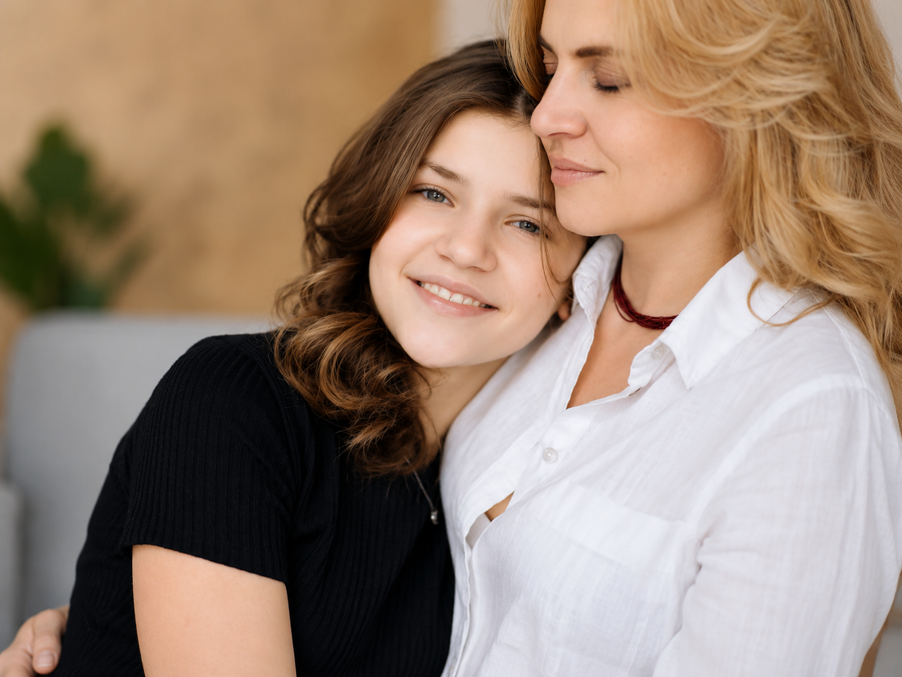

Programas para fortalecer tu liderazgo emocional
Herramientas reales para comunicarte mejor, poner límites desde el amor y recuperar la confianza con tu hijo adolescente.

Más Unión. Menos Conflictos.
Aprende a comunicarte con claridad, poner límites desde el amor, gestionar los conflictos sin gritos ni castigos, y recuperar la confianza mutua. Conecta emocionalmente con tu hijo y fortalece tu liderazgo parental con herramientas prácticas y efectivas.
- ✓ Módulos semanales en video
- ✓ Guía de trabajo descargable
- ✓ Comunidad privada de WhatsApp
- ✓ Ejercicios basados en Psicología, Coaching y PNL
Método Vínculo Seguro
Sesiones privadas para padres que desean un cambio profundo en la relación con sus hijos. Trabajamos tu historia, tus creencias, tu estilo de crianza y tus emociones para que te conviertas en el líder emocional que tu hijo necesita.
- ✓ Evaluación inicial + hoja de ruta personalizada
- ✓ Sesiones privadas, presenciales o por Zoom
- ✓ Acceso a recursos y ejercicios exclusivos
- ✓ Enfoque integral: cuerpo, mente y espíritu

6 Semanas para Reconectar con tu adolecente
Pequeños cambios diarios que generan grandes resultados. Un reto práctico y transformador para reconectar emocionalmente con tu hijo en medio de la rutina y el caos del día a día.
- ✓ Sientes distancia emocional con tu hijo
- ✓ Quieres evitar gritos y discusiones
- ✓ Deseas fortalecer el vínculo sin sentirte culpable o perdido/a

Habla sin Gritar, Conecta sin Chocar
90 minutos para aprender a hablar sin gritar y conectar sin chocar. Un taller práctico y directo para padres que buscan mejorar la forma en la que se comunican con sus hijos adolescentes. Aprenderás a expresar tus mensajes con claridad, escuchar sin reaccionar, y guiar con firmeza sin romper la conexión.
- ✓ Guía rápida descargable
- ✓ Técnicas de comunicación emocional
- ✓ Acceso a la grabación

Ayuda a tu Hijo a Verse con Amor
Diseñado para padres que desean apoyar la autoestima de sus hijos desde casa, con estrategias emocionales claras, validadas y adaptadas a la adolescencia.
- ✓ Se compara con otros
- ✓ Tiene baja confianza o inseguridad
- ✓ Ha vivido bullying o rupturas afectivas
- ✓ Muestra señales de dependencia emocional